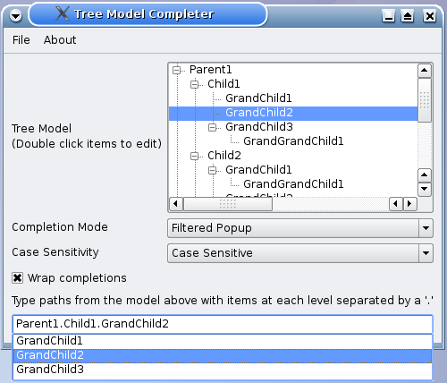

Tree Model Completer Example
The Tree Model Completer example shows how to provide completion facilities for a hierarchical model, using a period as the separator to access Child, GrandChild and GrandGrandChild level objects.

Similar to the Completer Example, we provide QComboBox objects to enable selection for completion mode and case sensitivity, as well as a QCheckBox for wrap completions.
The Resource File
The contents of the TreeModelCompleter is read from treemodel.txt. This file is embedded within the treemodelcompleter.qrc resource file, which contains the following:
<!DOCTYPE RCC><RCC version="1.0">
<qresource prefix="/">
<file>resources/treemodel.txt</file>
</qresource>
</RCC>
TreeModelCompleter Class Definition
The TreeModelCompleter is a subclass of QCompleter with two constructors - one with parent as an argument and another with parent and model as arguments.
class TreeModelCompleter : public QCompleter { Q_OBJECT Q_PROPERTY(QString separator READ separator WRITE setSeparator) public: explicit TreeModelCompleter(QObject *parent = nullptr); explicit TreeModelCompleter(QAbstractItemModel *model, QObject *parent = nullptr); QString separator() const; public slots: void setSeparator(const QString &separator); protected: QStringList splitPath(const QString &path) const override; QString pathFromIndex(const QModelIndex &index) const override; private: QString sep; };
The class reimplements the protected functions splitPath() and pathFromIndex() to suit a tree model. For more information on customizing QCompleter to suit tree models, refer to Handling Tree Models.
TreeModelCompleter also has a separator property which is declared using the Q_PROPERTY() macro. The separator has READ and WRITE attributes and the corresponding functions separator() and setSeparator(). For more information on Q_PROPERTY(), refer to Qt's Property System.
TreeModelCompleter Class Implementation
The first constructor constructs a TreeModelCompleter object with a parent while the second constructor constructs an object with a parent and a QAbstractItemModel, model.
TreeModelCompleter::TreeModelCompleter(QObject *parent) : QCompleter(parent) { } TreeModelCompleter::TreeModelCompleter(QAbstractItemModel *model, QObject *parent) : QCompleter(model, parent) { }
The separator() function is a getter function that returns the separator string.
QString TreeModelCompleter::separator() const { return sep; }
As mentioned earlier, the splitPath() function is reimplemented because the default implementation is more suited to QFileSystemModel or list models. In order for QCompleter to split the path into a list of strings that are matched at each level, we split it using QString::split() with sep as its separator.
QStringList TreeModelCompleter::splitPath(const QString &path) const { return (sep.isNull() ? QCompleter::splitPath(path) : path.split(sep)); }
The pathFromIndex() function returns data for the completionRole() for a tree model. This function is reimplemented as its default implementation is more suitable for list models. If there is no separator, we use QCompleter's default implementation, otherwise we use the prepend() function to navigate upwards and accumulate the data. The function then returns a QStringList, dataList, using a separator to join objects of different levels.
QString TreeModelCompleter::pathFromIndex(const QModelIndex &index) const { if (sep.isNull()) return QCompleter::pathFromIndex(index); // navigate up and accumulate data QStringList dataList; for (QModelIndex i = index; i.isValid(); i = i.parent()) dataList.prepend(model()->data(i, completionRole()).toString()); return dataList.join(sep); }
MainWindow Class Definition
The MainWindow class is a subclass of QMainWindow and implements five custom slots: about(), changeCase(), changeMode(), highlight(), and updateContentsLabel().
class MainWindow : public QMainWindow { Q_OBJECT public: MainWindow(QWidget *parent = nullptr); private slots: void about(); void changeCase(int); void changeMode(int); void highlight(const QModelIndex &index); void updateContentsLabel(const QString &sep);
In addition, the class has two private functions, createMenu() and modelFromFile(), as well as private instances of QTreeView, QComboBox, QLabel, TreeModelCompleter and QLineEdit.
private: void createMenu(); QAbstractItemModel *modelFromFile(const QString &fileName); QTreeView *treeView = nullptr; QComboBox *caseCombo = nullptr; QComboBox *modeCombo = nullptr; QLabel *contentsLabel = nullptr; TreeModelCompleter *completer = nullptr; QLineEdit *lineEdit = nullptr; };
MainWindow Class Implementation
The MainWindow's constructor creates a MainWindow object with a parent and initializes the completer and lineEdit. The createMenu() function is invoked to set up the "File" menu and "Help" menu. The completer's model is set to the QAbstractItemModel obtained from modelFromFile(), and the highlighted() signal is connected to MainWindow's highlight() slot.
MainWindow::MainWindow(QWidget *parent) : QMainWindow(parent) { createMenu(); completer = new TreeModelCompleter(this); completer->setModel(modelFromFile(":/resources/treemodel.txt")); completer->setSeparator(QLatin1String(".")); QObject::connect(completer, QOverload<const QModelIndex &>::of(&TreeModelCompleter::highlighted), this, &MainWindow::highlight); QWidget *centralWidget = new QWidget; QLabel *modelLabel = new QLabel; modelLabel->setText(tr("Tree Model<br>(Double click items to edit)")); QLabel *modeLabel = new QLabel; modeLabel->setText(tr("Completion Mode")); modeCombo = new QComboBox; modeCombo->addItem(tr("Inline")); modeCombo->addItem(tr("Filtered Popup")); modeCombo->addItem(tr("Unfiltered Popup")); modeCombo->setCurrentIndex(1); QLabel *caseLabel = new QLabel; caseLabel->setText(tr("Case Sensitivity")); caseCombo = new QComboBox; caseCombo->addItem(tr("Case Insensitive")); caseCombo->addItem(tr("Case Sensitive")); caseCombo->setCurrentIndex(0);
The QLabel objects modelLabel, modeLabel and caseLabel are instantiated. Also, the QComboBox objects, modeCombo and caseCombo, are instantiated and populated. By default, the completer's mode is "Filtered Popup" and the case is insensitive.
QLabel *separatorLabel = new QLabel;
separatorLabel->setText(tr("Tree Separator"));
QLineEdit *separatorLineEdit = new QLineEdit;
separatorLineEdit->setText(completer->separator());
connect(separatorLineEdit, &QLineEdit::textChanged,
completer, &TreeModelCompleter::setSeparator);
QCheckBox *wrapCheckBox = new QCheckBox;
wrapCheckBox->setText(tr("Wrap around completions"));
wrapCheckBox->setChecked(completer->wrapAround());
connect(wrapCheckBox, &QAbstractButton::clicked, completer, &QCompleter::setWrapAround);
contentsLabel = new QLabel;
contentsLabel->setSizePolicy(QSizePolicy::Fixed, QSizePolicy::Fixed);
connect(separatorLineEdit, &QLineEdit::textChanged,
this, &MainWindow::updateContentsLabel);
treeView = new QTreeView;
treeView->setModel(completer->model());
treeView->header()->hide();
treeView->expandAll();
connect(modeCombo, &QComboBox::activated,
this, &MainWindow::changeMode);
connect(caseCombo, &QComboBox::activated,
this, &MainWindow::changeMode);
lineEdit = new QLineEdit;
lineEdit->setCompleter(completer);
We use a QGridLayout to place all the objects in the MainWindow.
QGridLayout *layout = new QGridLayout;
layout->addWidget(modelLabel, 0, 0); layout->addWidget(treeView, 0, 1);
layout->addWidget(modeLabel, 1, 0); layout->addWidget(modeCombo, 1, 1);
layout->addWidget(caseLabel, 2, 0); layout->addWidget(caseCombo, 2, 1);
layout->addWidget(separatorLabel, 3, 0); layout->addWidget(separatorLineEdit, 3, 1);
layout->addWidget(wrapCheckBox, 4, 0);
layout->addWidget(contentsLabel, 5, 0, 1, 2);
layout->addWidget(lineEdit, 6, 0, 1, 2);
centralWidget->setLayout(layout);
setCentralWidget(centralWidget);
changeCase(caseCombo->currentIndex());
changeMode(modeCombo->currentIndex());
setWindowTitle(tr("Tree Model Completer"));
lineEdit->setFocus();
}
The createMenu() function sets up the QAction objects required and adds them to the "File" menu and "Help" menu. The triggered() signals from these actions are connected to their respective slots.
void MainWindow::createMenu() { QAction *exitAction = new QAction(tr("Exit"), this); QAction *aboutAct = new QAction(tr("About"), this); QAction *aboutQtAct = new QAction(tr("About Qt"), this); connect(exitAction, &QAction::triggered, qApp, &QApplication::quit); connect(aboutAct, &QAction::triggered, this, &MainWindow::about); connect(aboutQtAct, &QAction::triggered, qApp, &QApplication::aboutQt); QMenu *fileMenu = menuBar()->addMenu(tr("File")); fileMenu->addAction(exitAction); QMenu *helpMenu = menuBar()->addMenu(tr("About")); helpMenu->addAction(aboutAct); helpMenu->addAction(aboutQtAct); }
The changeMode() function accepts an index corresponding to the user's choice of completion mode and changes the completer's mode accordingly.
void MainWindow::changeMode(int index) { QCompleter::CompletionMode mode; if (index == 0) mode = QCompleter::InlineCompletion; else if (index == 1) mode = QCompleter::PopupCompletion; else mode = QCompleter::UnfilteredPopupCompletion; completer->setCompletionMode(mode); }
The about() function provides a brief description on the Tree Model Completer example.
void MainWindow::about() { QMessageBox::about(this, tr("About"), tr("This example demonstrates how " "to use a QCompleter with a custom tree model.")); }
The changeCase() function alternates between Case Sensitive and Case Insensitive modes, depending on the value of cs.
void MainWindow::changeCase(int cs) { completer->setCaseSensitivity(cs ? Qt::CaseSensitive : Qt::CaseInsensitive); }
main() Function
The main() function instantiates MainWindow and invokes the show() function to display it.
int main(int argc, char *argv[]) { QApplication app(argc, argv); MainWindow window; window.show(); return app.exec(); }